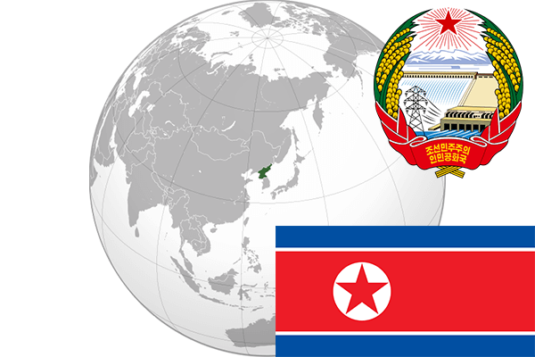

To`liq nomi: Korea Xalq Demokratik Respublikasi
Region: Sharqiy Osiyo
Qonunchilik shakli: Respublika
Mustaqillik kuni: 9-sentabr 1948 - yil
Poytaxt: Pxenyan
Maydoni: 120 540 km² (dunyoda 98 -o`rinda )
Chegaradosh davlatlari: Rossiya, Xitoy, Janubiy Korea
Aholisi: 24 720 407 (dunyoda 51 - o`rinda, 2013 -yil ro ʻyxat)
Aholi zichligi: 198,3/km²
Aholining o`rtacha yoshi: 72,0 yil ( 74,8 ayollar, 69,2 erkaklar)
Rasmiy tili: Kareys tili
Dini: Buddistlar, Kanfutsiylar, Xristianlar
Pul birligi: Shimoliy karea voni
Telefon prefiksi: +850
Internet domen: .kp
Xalqaro tashkilotlarga a`zoligi: BMT (1991 – yildan)
Dengiz va okeanlarga chiqishi: Sariq va Yapon dengizlari
YIM: Butun: $ 29,7 mlrd, Jon boshiga $ 2300
Yirik shaharlari: Pxenyan, Xamxin, Keson, Nason.